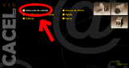
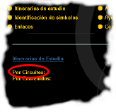
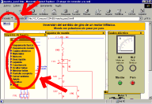
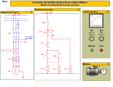

Mi primera visita
Aquí se muestra la secuencia a seguir para realizar el análisis
de un circuito cualquiera de CACEL.
En este caso se ha elegido el "Arranque de un motor trifásico. Mando
con pulsadores marcha/paro", pero el proceso es similar con cualquier
otro.
1- Desde la pantalla principal de CACEL, hacer clic en "itinerario de estudio"

2- En el menú emergente hacer clic en "Por Circuitos"

3- En la lista, elegir el circuito denominado "Arranque de un motor trifásico. Mando con pulsadores marcha/paro". Si el circuito buscado no se ve en la lista, picar en la barra de desplazamiento que aparece a la derecha de los nombres de los circuitos.
4- Al hacer clic sobre el nombre, aparece la ventana de simulación de circuitos.
5- Picar en el texto "Menú" situado en la esquina superior izquierda de la ventana y aparecerá un menú con varias opciones.

6- Es aconsejable seleccionar "Pantalla completa", ya que el espacio de pantalla aumenta y las ventanas se visualizan mejor.
7- Abrir, cerrar y desplazar las ventanas que el usuario crea necesarias. (Para simular un circuito es aconsejable tener visibles en pantalla las ventanas, Esquema de mando, Esquema de fuerza, Cuadro eléctricos y Motores)

8- Hacer clic en el pulsador de marcha situado en el cuadro eléctrico y observar que ocurre.

9- hacer clic en el pulsador de parada y ver que ocurre.

10- Pulsar nuevamente en el pulsador de marcha y hacer clic en el punto verde que aparece en el círculo de fuerza.

11- Observar lo que ocurre
12- Repetir los puntos 8, 9, 10 y 11 tantas veces como sea necesario hasta entender como funciona el circuito.
13- Abrir las ventas "Descripción", "Materiales" y "Leyenda" si son necesarias para entender el funcionamiento del circuito.
14- Abrir la ventana de cuestionario y responder a todas las preguntas.
15- hacer clic en "Comprobar" para verificar si las respuestas han sido correctas. Si no los son, repetir la operación tantas veces como se considere necesario.
¡IMPORTANTE!
En
el itinerario EVALUACIÓN, está desactivada la simulación
de circuitos.
Por lo tanto todos los elementos de actuación e indicación no
son operativos.